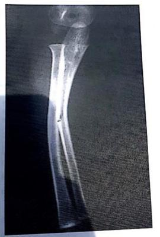
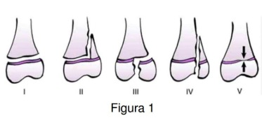
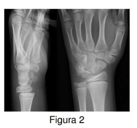

Questão 1 · Senilidade e Mecanismos de Trauma Geriátrico · Idoso · Cirurgia · 4000099345Principal causa de trauma no idoso?
A Atropelamento.
B Acidente de automóvel.
C Queimadura.
D Queda da própria altura.
Questão 2 · Implantes e Técnicas de Osteossíntese · 4000085409Homem, 43 anos, é admitido na emergência, trazido pelo serviço de remoção de urgência, devido à queda de 6 metros de altura há duas horas, após tentativa de suicídio. Na avaliação inicial, apresenta PA = 128 x 92 mmHg, com dores na coluna lombar, no joelho direito e no pé direito. O exame neurológico inicial revela paraparesia e redução da sensibilidade tátil em ambos os membros inferiores. Durante a exposição, verifica-se lesão cortocontusa no pé direito de 8 cm, com exposição óssea, pulso pedioso reduzido e perfusão normal. A radiogra a de joelho revela fratura no platô lateral no joelho direito com padrão de cisalhamento. A melhor opção para fixação é utilizar o conceito de placa:
A Em banda de tensão.
B De neutralização.
C Em ponte.
D De suporte.
Questão 3 · Fraturas do Antebraço · 4000040028Um menino de 6 anos sofreu queda de skate há 2 horas, com trauma no membro superior esquerdo. O exame físico revela dor e edema na região do antebraço esquerdo. A seguir, a Figura do raio x: A conduta mais adequada é:

A cirúrgica, com fixação com placa e parafuso
B cirúrgia, com fixação com haste intramedular
C redução incruenta e gesso axilopalmar
D conservadora, utilizando gesso axilopalmar
E nenhuma das alternativas anteriores
Questão 4 · Consolidação óssea em idosos · 4000013697Com relação aos pacientes politraumatizados, julgue o item a seguir. Em idosos, as fraturas de ossos longos são mais graves por causa da maior di culdade de consolidação decorrente da desmineralização óssea.
A Certo.
B Errado.
Questão 5 · Fraturas Geriátricas · Síndromes Medulares · Fratura do rádio distal · 4000103312Distúrbios do sistema musculoesquelético são as queixas mais comuns da população de meia-idade e idosos. A deterioração dos tendões, ligamentos e cápsulas articulares leva a um maior risco de lesão, ruptura espontânea e menor estabilidade articular. O risco de lesões aumenta no sistema musculoesquelético, e também nos tecidos moles adjacentes. Assinale a alternativa INCORRETA a respeito do Trauma Geriátrico.
A Os locais mais comuns de fraturas em idosos são arcos costais, fêmur proximal, quadril, úmero e punho.
B Fraturas isoladas de quadril em idosos geralmente não causam hemorragia classe III ou IV.
C Fratura de Colles resulta de queda sobre a mão estendida dorsifletida, causando fratura da metáfise do rádio distal.
D A estenose preexistente no canal medular aumenta o risco da Síndrome Anterior e Síndrome de Brown-Séquard da medula.
Questão 6 · Fraturas Patológicas · 4000102144Mulher, 58 anos, sofreu queda da própria altura ao escorregar no piso molhado. Refere que já apresentava dor na coxa há 1 mês. A radiogra a realizada no pronto-socorro mostra fratura de traço transverso, 2 cm abaixo do pequeno trocânter. Quais exames devem ser pedidos para o planejamento cirúrgico?
A Cintilografia óssea, Pet Scan e Ressonância magnética.
B Hemograma, glicemia e dosagem de albumina.
C Eletroforese de proteínas, dosagem de hormônio paratireoideano (PTH) e palpação da mama.
D Função renal, função hepática e densitometria óssea.
Questão 7 · Fraturas Patológicas · 4000093616Um homem de 63 anos portador de cirrose alcoólica é admitido com distúrbio convulsivo ao setor de emergência para avaliação após uma queda ao solo. O exame mostra dor e sensibilidade intensa na região torácica média da coluna vertebral. A radiogra a + TC da coluna torácica confirmam uma fratura compressiva de T10 e mostra osteopenia generalizada. Os exames laboratoriais revelam hipocalcemia e hipofosfatemia leves, com albumina normal. A causa mais provável da fratura patológica desse paciente é:
A Osteoporose senil.
B Câncer de próstata metastático.
C Osteomalacia.
D Hiperparatiroidismo.
Questão 8 · Radiograf ias · 4000052213“Quando se examinam as lesões de ossos longos, é importante verificar a integridade dos segmentos adjacentes ao membro. Portanto, as articulações acima e abaixo do nível da lesão são sempre incluídas nas radiogra as.” Sobre as imagens diagnósticas no trauma, é CORRETO afirmar que:
A O exame de tomografia pélvica deve ser realizado antes da fixação de uma lesão pélvica em livro aberto.
B A ressonância magnética deve ser realizada no atendimento inicial de um politraumatizado instável.
C O objetivo da avaliação radiológica de lesões intra-articulares é a quantificação da incongruência articular.
D Nas luxações de joelho, após a redução, se o pulso distal reaparecer, a arteriografia estará dispensada.
E Em fraturas ocultas de colo de fêmur, a cintilografia óssea é indicada nas primeiras 24 h após o trauma.
Questão 9 · Fraturas Patológicas · 4000052142"Quando um osso apresenta colapso através de uma área enfraquecida por uma doença preexistente, a lesão recebe o nome de fratura patológica." Sobre as fraturas patológicas, é CORRETO afirmar que:
A As causas podem incluir tumores primários do osso, lesões metastáticas, infecção e doenças metabólicas.
B Os termos fratura por enfraquecimento ou "por insuficiência" não são sinônimos de fraturas patológicas.
C As fraturas patológicas normalmente decorrem de traumas de alta energia que atigem a estrutura óssea.
D Paciente com densitometria óssea com indicativo de osteoporose tem menor risco para fratura patológica.
E A fratura de rádio distal sem cominuição em um paciente com osteoporose não é considerada patológica.
Questão 10 · Classif icação de SalterHarris · 4000048259A classificação de SALTER-HARRIS que compromete a metá se, atravessando a se e a epí se, até a articulação, corresponde ao tipo:
A I.
B II.
C III.
D IV.
E V.
Questão 11 · Condutas nas Fraturas Pediátricas · Classif icação de SalterHarris · 4000032340Uma criança de 8 anos, do sexo masculino, foi levada ao pronto atendimento devido a trauma em terço distal de perna direita, durante uma partida de futebol. Seu tornozelo direito estava com edema, dolorido e com limitação dos movimentos. Uma radiogra a foi realizada e zeram o diagnóstico de fratura de Salter-Harris do tipo II. Em relação a essa fratura, podemos afirmar que:
A Ocorre na região metaepifisária dos ossos longos, com um fragmento da epífise aderida na metáfise proximal.
B Ocorre na região diafisária dos ossos longos na transição entre a diáfise e a metáfise, sendo chamado o fragmento de Thurstan Holland.
C Ocorre na camada hipertrófica da epífise de crescimento, sendo a fratura mais frequente do tipo Salter-Harris.
D Ocorre na camada basal da epífise distal dos ossos longos, onde existe uma maior capacidade de proliferação celular, predispondo a fraturas.
Questão 12 · Princípios de Imobilização · 4000111264Após a redução de uma fratura, seguindo a regra geral para tratamento conservador (com gesso):
A Não há necessidade de imobilização das articulações.
B Tanto a articulação proximal como a distal devem ser imobilizadas.
C A imobilização conservadora das articulações deve ser evitada para prevenção de artrodese.
D Somente a articulação proximal deve ser imobilizada.
Questão 13 · Princípios de Imobilização · 4000009428Com o objetivo de se tratar uma fratura não cirurgicamente, a ordem CORRETA dos materiais para se confeccionar uma tala gessada é:
A Faixa crepe, gesso, malha tubular e algodão ortopédico.
B Malha tubular, faixa crepe, gesso e algodão ortopédico.
C Algodão ortopédico, gesso, faixa crepe e malha tubular.
D Algodão ortopédico, faixa crepe, gesso e malha tubular.
E Malha tubular, algodão ortopédico, gesso e faixa crepe.
Questão 14 · Conceitos Básicos do Trauma Ortopédico · 4000100436Sobre os principais achados da anamnese e do exame físico que sugerem fraturas, analise as assertativas abaixo: I. Piora aguda da dor e dor bem localizada à palpação. II. Incapacidade funcional aguda e edema ou equimose local. III. Perda da mobilidade do membro e déficit neurológico e/ou vascular associado. Quais estão corretas?
A Apenas II.
B Apenas I e II.
C Apenas I e III.
D Apenas II e III.
E I, II e III.
Questão 15 · Fraturas do Antebraço · 4000076508Sobre as fraturas dos ossos do antebraço na criança é correto afirmar:
A Fraturas em galho verde são de tratamento cirúrgico.
B Assim como nos adultos, a deformação plástica dos ossos do antebraço pode ocorrer nas crianças e adolescentes pela combinação de forças de compressão e tensão.
C Encurvamentos de até 20 graus em crianças menores de 4 anos podem remodelar e não precisam de redução, apenas imobilização.
D O descolamento epifisário grau III de salter-harris é o mais comum no terço distal do rádio de crianças e adolescentes.
E Fratura de monteggia consiste na fratura do terço distal do rádio associada à luxação da articulação radioulnar distal.
Questão 16 · Fraturas Pediátricas · 4000071318Observe as guras a seguir. Fraturas do 1/3 distal do rádio em crianças são frequentes. Considerando a classificação de Salter-Harris (Figura 1) e a radiogra a do punho nas incidências anteroposterior e per l (Figura 2), assinale a alternativa correta. (VER IMAGENS)


A Nos tipos I, II e V (Figura 1), o tratamento, em geral, é conservador.
B Fixação com parafuso transfisário é a escolha para o tipo III (Figura 1).
C No tipo IV (Figura 1), a formação de barra óssea é pouco frequente.
D O tipo V (Figura 1) é diagnosticado precocemente por radiografia.
E A Figura 2 ilustra caso que necessita tratamento cirúrgico.
Questão 17 · Diagnóstico · Fraturas Patológicas · Diagnósticos dif erenciais · 4000059235Paciente masculino, 35 anos de idade, queixando-se de dor na coluna na região dorsal com 7 meses de duração. A radiogra a de coluna revelou colapso parcial de t6 e t7, além de erosão do disco intervertebral. Das patologias, a mais provável é:
A Osteoporose.
B Osteoartrose.
C Tuberculose.
D Metástase de carcinoma broncogênico.
Questão 18 · Fraturas Patológicas · 4000027715A fratura atipíca do fêmur representa um novo padrão de lesão em pacientes com doença osteoporótica em uso prolongado de bifosfonatos. Nos achados radiográficos destes pacientes, a configuração esperada da fratura é:
A Cominuida.
B Espiral ou oblíqua longa.
C Segmentar com asa de borboleta.
D Transversa ou oblíqua curta.
Questão 19 · Fraturas do Fêmur · 4000101129Sobre as fraturas diafisárias do fêmur da criança, analisar os itens abaixo: I - Nas fraturas do terço proximal, o fragmento proximal sofre maior influência do glúteo médio, dos rotadores externos e psoas, resultando em sua flexão, rotação externa e adução. II - De modo geral, as fraturas em crianças com até um ano de idade consolidam em duas a três semanas. III - Os pré-requisitos para o tratamento de fraturas com gesso imediato são: ausência de encurtamento, edema não muito acentuado e fratura causada por trauma de baixa energia. Está (ão) CORRETO (S):
A Todos os itens.
B Somente os itens I e III.
C Somente os itens I e II.
D Nenhum dos itens.
E Somente o item II.
Questão 20 · Princípios de Imobilização · 4000060486É essencial que o tratamento médico inicial faça uma completa avaliação e dê início aos procedimentos de emergência, incluindo imobilizações e tratamento dos ferimentos. Sobre o tratamento das lesões musculoesqueléticas, é CORRETO afirmar que:
A Todos os curativos estéreis devem ser removidos para a realização das radiografias iniciais.
B As luxações devem ser reduzidas utilizando manobras contrárias à deformidade inicial.
C A tração com imobilização provisória deve ser evitada devido ao risco de síndrome compartimental.
D As lesões do anel pélvico são ocultas e em sua maioria não estão associadas a outras lesões do sistema musculoesquelético.
E As articulações acima e abaixo da fratura de um osso longo devem ser radiografadas para um maior controle pós- redução.
Questão 21 · Tipos de Fraturas · 4000060479"Fratura é uma ruptura na arquitetura normal do osso. Nas lesões pediátricas, as fraturas podem incluir uma lesão localizada na placa cartilaginosa de crescimento ou uma lesão através desta placa que pode não ser evidente radiologicamente". Sobre os tipos de fratura é correto afirmar:
A As fraturas agudas apresentam bordas arredondadas e escleróticas devido ao hematoma que se organiza.
B As fraturas que atingem a cartilagem de crescimento são chamadas de articulares.
C As fraturas transversas e oblíquas ocorrem quando um momento de arqueamento é aplicado.
D As fraturas intra-articulares com desvio precisam de estabilidade e fixação relativa.
E As fraturas por estresse são causadas por forças de distração associadas a cisalhamento.
Questão 22 · Senilidade e Mecanismos de Trauma Geriátrico · 4000013768Acerca de traumas, urgências ortopédicas e doenças infecciosas, julgue o próximo item: Estima-se que, anualmente, um em cada três indivíduos com mais de sessenta e cinco anos de idade sofre quedas da própria altura e que um em cada vinte daqueles que caem tenha pelo menos uma fratura ou necessite de internação hospitalar.
A Certo.
B Errado.
Questão 23 · Tipos de Fraturas · 4000012727Assinale a alternativa que apresenta a definição de fraturas cominutivas.
A São aquelas em que há solução de continuidade com a pele adjacente.
B São aquelas que apresentam vários fragmentos ósseos.
C São as rupturas incompletas dos ossos.
D São aquelas que alcançam as articulações.
E São aquelas que ocorrem nas placas epifisárias.
Questão 24 · Def inição Epidemiologia e Fisiopatologia · 4000007087O trauma crônico e repetitivo que leva a rupturas microscópicas quando o osso sofre uma carga superior ao seu ponto de colapso, é conhecida como:
A Fratura crônica
B Fratura espirais
C Fratura em "torus"
D Fratura de estresse
E Fratura em galho verde
Questão 25 · Princípios de Osteossíntese · 4000081144São princípios básicos no tratamento cirúrgico das fraturas, exceto:
A Utilização de imobilização gessada pós-operatória;
B Fixação óssea estável;
C Correção dos desvios rotacionais;
D Mobilidade precoce;
E Preservação do suprimento sanguíneo aos fragmentos ósseos.
Questão 26 · Ultrassonograf ia · Semiologia do joelho · Lesão ligamentar e meniscal do joelho · 4000028597A ultrassonografia é indicada para a avaliação das seguintes estruturas, exceto:
A Tendão quadríceps.
B Meniscos
C Ligamentos colaterais.
D Ligamento patelar.
E Tendão da pata anserina.
Questão 27 · Traços de Fraturas · Fraturas Pediátricas · 4000053565A fratura em “galho verde”, peculiar em crianças, é do tipo:
A Espiralada
B Cominutiva
C Transversa
D Incompleta
E nenhuma das anteriores
Questão 28 · Contusão e luxação do cotovelo · Princípios de Imobilização · 4000047437Analise os conceitos abaixo sobre luxações e imobilização de fraturas e assinale aquele (s) que se apresenta (m) em desacordo com o tratamento ideal? I - O edema é um fenômeno normal após traumatismos e pode levar ao comprometimento da circulação da extremidade se a imobilização for inadequada ou excessivamente compressiva. II - Antes da aplicação de qualquer imobilização, gessada ou não, devem ser avaliadas as condições de pele, os edemas e as manobras a serem efetuadas, pois o tipo de imobilização escolhido, a posição e as moldagens devem ser programadas em função dessas condições. III - Após a imobilização, o paciente e seus familiares precisam ser informados dos riscos e dos cuidados a serem tomados, e, caso apareçam sinais compressivos de dor, cianose, isquemia e alterações da sensibilidade, o paciente deve ser observado em casa e somente retornar ao hospital caso esses sintomas permanecerem por, no mínimo, seis horas. IV - A luxação de cotovelo é uma lesão que ocorre com mais frequência em indivíduos jovens e se apresenta com um diagnóstico fácil através da história clínica e com auxílio do RX. V - O seu objetivo de tratamento visa uma imobilização primária com tala gessada, seguida de observação por 24 horas, e redução no centro cirúrgico após a diminuição do edema. Referência: COHEN, M.; MATTAR JR, R.; JESUS- GARCIA FILHO, R. e colaboradores - Tratado de Ortopedia, Editora Roca, 2007.
A Os conceitos I, II, III e IV
B Os conceitos I e IV
C Os conceitos II e III
D Os conceitos III e IV
E Os conceitos I e II
Questão 29 · Classif icação de SalterHarris · 4000030031Nas fraturas da criança, aquela que se apresenta com traço ao longo da placa sária e se dirige para a região meta sária é classificada, segundo salter-harris, como um tipo:
A I.
B II.
C III.
D IV.
E V.
Questão 30 · Ressonância Nuclear Magnética · 4000022927Para aquisição de imagens pela ressonância magnética usa-se:
A Energia radiante.
B Energia do átomo de hidrogênio.
C Energia do átomo de oxigênio.
D Energia do átomo de carbono.
E Energia radioativa.
Questão 31 · Epidemiologia · 4000008994Sobre as fraturas de membro inferior em crianças assinale a afirmativa INCORRETA:
A A mais comum é a do fêmur e está relacionada significativamente à colisão de automóveis.
B As fraturas da tíbia são as mais frequentes e causadas, na maioria das vezes, por quedas pouco importantes.
C A localização da fratura, sua gravidade e a idade da criança influenciam no tratamento.
D Muitas dessas fraturas acontecem em crianças ainda aprendendo a andar ou são fraturas de baixa energia e sem deslocamento.
E Colisões de automóveis e lesões de alta energia são mais comuns em crianças mais maduras, resultando em fraturas da tíbia e da fíbula.
Questão 32 · Fatores para a Consolidação Óssea · 4000044309São fatores fundamentais para a consolidação de uma fratura: Respostas: 1 12 23
A estabilização e redução anatômica.
B estabilização e vascularização.
C vascularização e movimento precoce.
D movimentação precoce e redução anatômica.